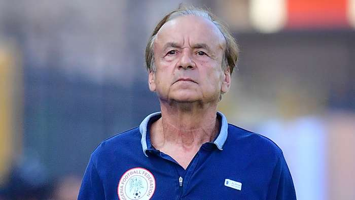

CHELSEA MANAGER

Frank James Lampard OBE
(born 20 June 1978) is an English professional football manager and former player who is the head coach of Premier League club Chelsea. As a player, he is widely considered to be one of Chelsea's greatest ever players, and one of the greatest midfielders of his generation. A creative and technically gifted box-to-box midfielder, Lampard began his career in 1995 at West Ham United, the club where his father, Frank Lampard Sr., also played. He is best known for his time at Londo…Has Gernot Rohr reached the end of the road with the Super Eagles?
The Franco-German coach has a point to prove after one of Nigeria’s worst results during his tenure Four and a half years after Gernot Rohr was first appointed by Nigeria, the German coach finds himself at a crossroads during his time as Super Eagles head coach. Friday’s 4-4 draw with Sierra Leone, a defeat in almost everything but name, represented one of the national side’s worst performances in living memory. Ironically, the first half an hour of that match represented one of their finest spells of football since Rohr took the helm, as the Super Eagles put four past the Leone Stars without response, and appeared on course for a record-breaking victory.
